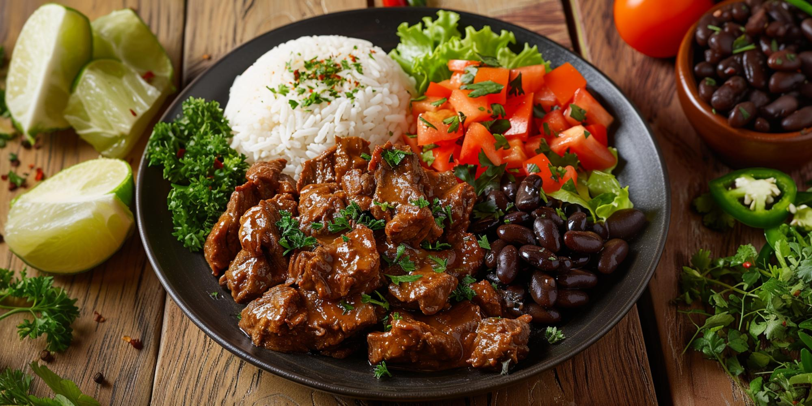
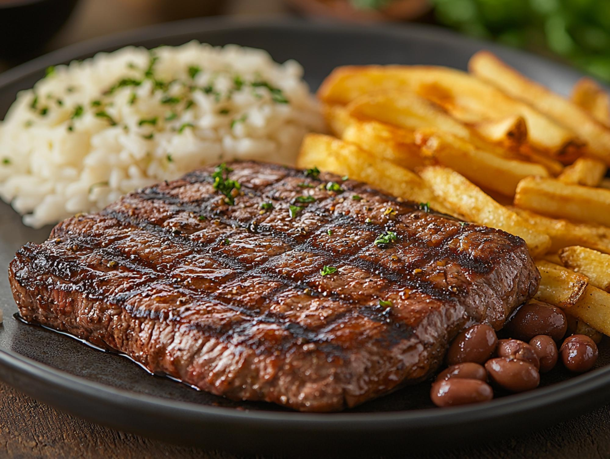
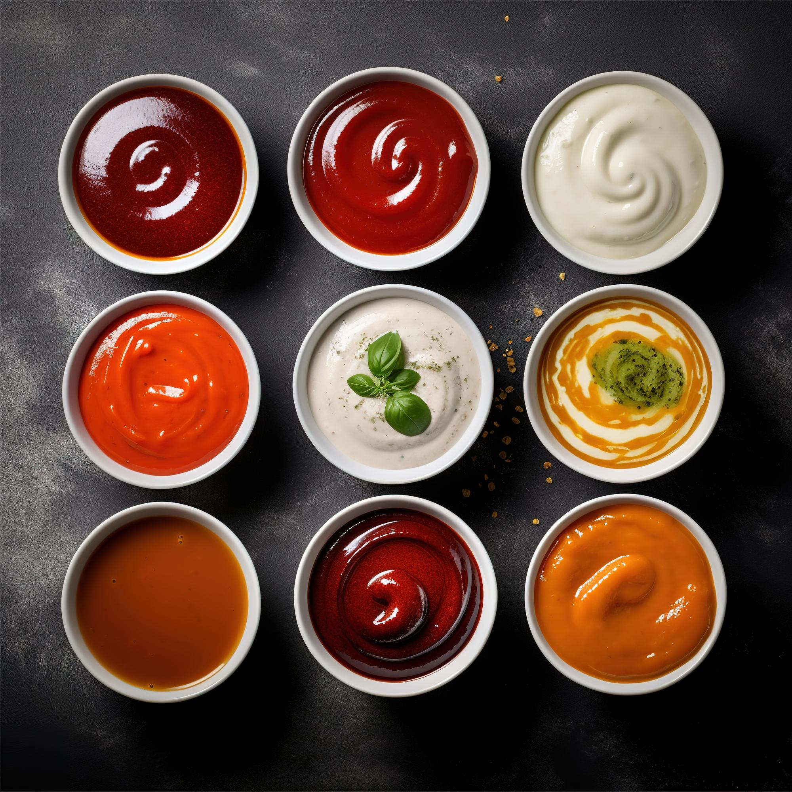

CLÁSSICO DA CASAPrato da Vila
Arroz, feijão, carne preparada na hora e acompanhamentos.
COMIDA BOA, SEM COMPLICAÇÃO
Receitas cheias de sabor, aquele clima acolhedor e opções para deixar qualquer refeição mais gostosa.
Ver cardápio ↓* Conceito visual para demonstração. Informações ilustrativas.


COMIDA QUE ABRAÇAMAIS QUE UMA REFEIÇÃO
A ideia do Sabor da Vila é celebrar aquela comida que reúne as pessoas: pratos conhecidos, ingredientes coloridos e uma experiência sem frescura.
Este conteúdo foi criado para um projeto experimental de cardápio online. Não representa um estabelecimento real.
Fale com a gente ↗PARA ACOMPANHAR
Bebidas geladinhas para completar a experiência.

VAMOS CONVERSAR?
Este botão é apenas demonstrativo. Os dados de contato e o cardápio não são reais.